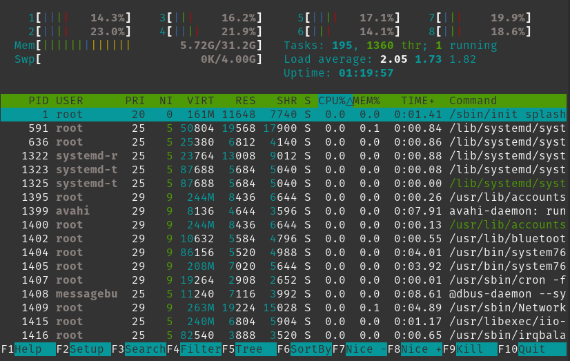

Markdown | PDF | MS Word DOCX | Libre ODT | HTML
This week we give a quick refresher on the CLI and introduce new concepts related to system administration and processes.
Try a CLI in your browser:
NOTE: You will need to use Kali Linux for future sessions and the browser terminal will no longer be useful for practical exercises. If you have not set it up yet, please see our instructions in the class README.
Tab key after partially typing a filename, the terminal will try to autocomplete. If you hit Tab again, you will get a list of all filenames with the matching pattern. Example: ls -l ~/D + hitting Tab twice will list ~/Desktop, ~/Documents, ~/Downloads and so on. If you try ls -l ~/Desk + hitting Tab once, it will autocomplete ~/Desktop
Command suggestions: The default terminal in Kali Linux has syntax color-coding and autocompletes commands and their options. You will see suggestions as faded text as you type. If you hit your right arrow key → it will autocomplete your command with the suggestion.
Command history: Most modern terminal emulator programs have command histories, which are stored in a text file in the user's home directory. To browse through your command history, hit the up arrow ↑. This is really useful when you have long commands you want to repeat, perhaps with different options or switches, and allows you to easily fix typos that may have caused a previous command to fail. To clear your command history, type history -c.
Clear screen: To clear your screen use clear.
Wildcard character: The asterisk character * is used as a "wildcard" stand-in for missing characters. This is useful, for example, to perform commands on many files with similar filenames. If you run rm *.txt, all files with the extension .txt will be deleted in the current directory. If you run rm Sean* all files that start with "Sean" will be deleted in the current directory. And so on.
Cancel or Stop Command: Hitting CTRL+C or Cmd+C will "kill" a running command. This is useful, for example, if you have made an error or the command is running longer than expected. You can also use this to give you a fresh prompt if you're in the middle of typing a command and decide not to run it.
Case sensitivity: Remember, filenames and commands are case-sensitive. mkdir ~/Scott and mkdir ~/scott would create two separate directories.
These are commands we used in the livestream session for Week 2, but are also in the Week 1 homework.
mkdir - make directoryTo create a new directory, use the mkdir command. You can only create a directory where you have permission to do so. Permissions are a concept we will cover in class later. For now, try creating the directory catphotos in your home directory: mkdir ~/cats
touch - create an empty fileThe touch command creates a new, empty file such as touch ~/cats/awesome-cat-names.txt
nano - simple text editorNano is one of many text editors that can be loaded with the CLI, but is probably the simplest. It will load a file in a separate view that can be exited with CTRL+X and you will see this at the bottom of the screen represented as ^X For more information, read this tutorial.
Create your own list of awesome cat names with nano ~/cats/awesome-cat-names.txt
Traditionally, the two text editors that hackers use are vi or emacs There is a tongue-in-cheek "editor war" between these two editors.
rm - removeDelete a file: rm cool-cat-names2.txt
Use rm -R to delete a directory and its contents.
Be careful! There are jokes on the Internet that hackers like to test on new users, or "n00bs", such as rm -Rf / that can be very dangerous. Luckily, you usually have to be the administrative superuser "root" to do serious damage to your filesystem.
sudo - superuser dosudo allows users to run commands and programs with the security privileges of another user, by default the administrative "superuser" or root user. Generally speaking, you will need sudo for administrative tasks, to install software, and to modify files owned by other users (including nearly all the files outside of your user's home directory ~).
In Unix-like operating systems such as GNU/Linux and MacOS, sudo has largely replaced the default use of an administrative root account. This can prevent some exploits.
passwd - set passwordUse passwd to change the password for your user (when you enter the password, the cursor will not change to hide your password from the screen).
If you typed passwd sean it would try to change the password for user sean. However, you likely would need to use sudo passwd sean to escalate your privileges to that of the administrative superuser.
adduser - add userCreate a new user with adduser. sudo adduser chicken will create a user named "chicken" and, by default, the home directory for the user will be created at /home/chicken as well. The CLI will ask you a lot of "profile" questions about the user's real name etc. but you can skip these.
deluser - delete userDelete a user with deluser. sudo deluser chicken will delete the user named "chicken". You will need to remove the home directory for the user separately, for example by running sudo rm -Rvf /home/chicken
hostname - display hostnameYour "hostname" is how the operating system identifies the machine to programs on your system and other machines on a network. Hostnames are usually short labels that are useful locally to network and system administrators. The hostname command displays your hostname.
hostnamectl - hostname controlRunning the hostnamectl command with no options displays detailed information about your machine and operating system. It is useful when you need quick details about the machine you are running commands on.
The hostnamectl command can also be used to change your hostname. Use sudo hostnamectl set-hostname chickencoop --static to change the hostname the machine uses on the network to "chickencoop". The static hostname is stored on the filesystem in /etc/hostname.
Use sudo hostnamectl set-hostname Chicken-Coop --pretty to change the "pretty" hostname for local programs to "Chicken-Coop".
Use sudo hostnamectl set-hostname flewthecoop --transient to change the transient hostname. This hostname is for identifying to network protocols like DHCP but is not necessary, as the static hostname will be used if there is no transient one.
An instance of a computer program that is running is called a "process". Firefox web browser, for example, may run as the firefox process. Processes on your system that run in the background may be called "services" or "daemons". Daemon is an older Unix-y term.
top - process viewertop gives you a simple view of processes on the system and will update in real-time. Hit q to quit.
htop - process viewer and managerhtop is a replacement for top that gives you a prettier view and also more control over processes. The options menu is at the bottom and you can, for example, stop processes using F9 for "Kill". Hit F10 to quit.
)
Try sudo ls /proc/1. What do you see? More information about ls /proc here.
Try sudo ps aux. What do you see? More information about ps here.